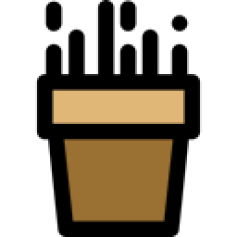

<ion-header>
  <ion-toolbar>
    <div>Categories</div>
    <ion-buttons slot="start">
      <ion-back-button defaultHref="/tabs/tab1"></ion-back-button>
    </ion-buttons>
  </ion-toolbar>
</ion-header>

<ion-content fullscreen>
  <div class="bg">
    <ion-card (click)="spacingModal()">
      <ion-card-header class="card-header">
          
          <div class="title">Potato Spacing</div>
      </ion-card-header>

      <ion-card-content class="card-content">

      </ion-card-content>
    </ion-card>

    <ion-card class="watering" (click)="wateringModal()">
      <div class="card">Watering</div>
      
    </ion-card>

    <ion-card class="temperatureofsoil" (click)="temperatureModal()">
      <div class="card">Temperature of Soil</div>
      
    </ion-card>

    <ion-card class="weeding" (click)="weedingModal()">
      <div class="card">Weeding</div>
    </ion-card>
  </div>
</ion-content>